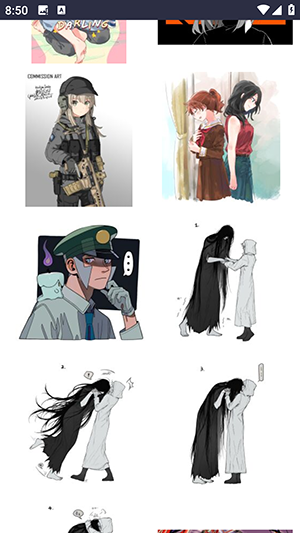
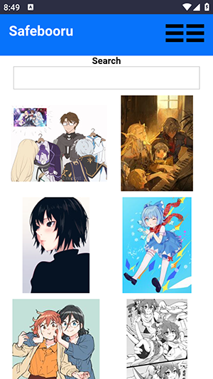

Safebooru 从零到会用：给完全不懂图站客户端的你
这篇带你从完全不懂到用起来，不需要任何基础。Safebooru 是轻量的安卓图站客户端，3.4MB 小体积却能访问多个 booru 图站，本文一步步教你装起来、跑通、上手最实用的几个功能。
它到底是干嘛的——一个生活化类比
你有没有过这种体验：想找一张特定风格的插画，翻遍搜索引擎结果页，要么质量不高，要么尺寸不对，要么被各种弹窗广告打断？
Safebooru 解决的就是这个问题——它是一个轻量的安卓客户端，专门用来浏览和下载 booru 图片站点的内容。booru 是个日语借词，意思就是"图站"，指的是那种专门存插画、摄影图的网站。打个比方：搜索引擎是大马路，车多人杂、限速又拥堵；Safebooru 就像一条专用高速，直接把你送到图站门口，没有中间环节、没有弹窗广告，你想要的图就在那里等着你。
Safebooru v1.0 只有 3.4MB，轻量到什么程度？你用微信发一张普通图片的体积都比它大。它不搞花里胡哨的功能，不强制注册登录，不弹新手引导，就专心做好一件事——帮你更快地找到、浏览、下载感兴趣的图片。
它的官网也很朴素，没有华丽的介绍页面，就几个下载链接和简短的功能说明。这种低调的风格其实挺好——你下完装完，五分钟之内就能开始用，不会被一堆宣传文案绊住脚。
五分钟上手：从下载安装到第一次跑通
别担心，整个过程真的只要五分钟。下面一步步来，跟着做就行。
第一步：拿到安装包
Safebooru 不在 Google Play 或国内应用商店上架，需要从官方下载获取 APK 安装包。这里提几个挑选下载来源的小原则：
- 认准版本号是 v1.0 的
- 安装包 MD5 值是
1bd9844e6d257557c81d1b90b796f7a1，下完可以校验一下（校验方法本文后面会讲） - 优先选口碑好的站点或你熟悉的镜像，不要随便点弹窗广告里的链接
安装包体积小，不管用 Wi-Fi 还是移动网络下载都很快，一般几秒钟就完事。
第二步：允许安装未知来源
这是安卓系统的安全机制——默认情况下，应用只允许从应用商店安装。Safebooru 不在应用商店，所以需要手动开一下权限：
- 下载完点安装，系统会弹出"阻止安装未知来源应用"的提示
- 点「设置」→ 找到当前下载用的浏览器或文件管理器 → 勾选「允许安装未知来源」
- 返回安装界面，这次就能正常点安装了
不同安卓版本界面略有差异：安卓 8.0 及以上是"每个应用单独授权"，老版本可能是全局开关。别慌，核心动作就是那一步"允许"，实在找不到就翻一下手机设置里的「安全」或「隐私」分类。
第三步：首次启动
装好了直接点图标打开。你会发现它很干净——没有登录页面，没有引导动画，没有"欢迎使用"的弹窗，直接就进入首页了。首页是一堆缩略图网格，默认展示热门流。
系统可能会弹一个权限请求——"是否允许访问存储"——点允许就行。不然后面下载的图片没地方存，下一张失败一张，到时候别奇怪。
到这里，你已经成功跑通了。就这么简单。

上手后先玩这三个功能
跑通之后别急着刷，先把下面三个功能玩透，你会发现体验提升了一大截。
功能一：黑名单——让不想看的内容彻底消失
这是 Safebooru 最实用的功能之一。你有没有过刷着刷着突然跳出一张你完全不想看的图？手动跳过挺烦的，加黑名单之后，这类图直接从你的世界里消失，再也不会在搜索结果里出现。
怎么进？点右上角三条横线打开侧边菜单 → 设置 → 找到「黑名单」选项。v1.0 的界面很朴素：一个文本框，每行写一个标签。
语法也不复杂：每行一个标签名就行。比如你不想看机甲图，就写 mecha；不想看兽人，就写 furry。还有个"或逻辑"的写法，用波浪线 ~ 把几个标签拼在一起，一行写 ~1boy ~2boys 表示命中其中任意一个都隐藏。
建议起步配置里至少加上 rating:explicit 和 rating:questionable——把成人向和边缘内容挡在门外，后面想调再改。
这个设置是永久保存的，关掉 app 再打开也不会丢，配置一次终身受益。
功能二：搜索——用标签精准找到你想要的
Safebooru 的搜索和普通搜索引擎不一样，它用"标签"来搜。标签是图站给每张图打上的关键词，比如一张初音未来的图可能有 hatsune_miku、vocaloid、solo、long_hair 这些标签。
搜索框的用法很直接：想搜什么标签就输什么，用空格隔开多个标签表示"同时满足"。想排除某个标签，在前面加个减号 -school_uniform 就行。
小技巧：先在搜索框里用减号临时测试排除效果，确认某个标签确实不想要了，再搬到黑名单里永久化。免得黑名单里加了一堆东西，后来想删又得一个个翻。更复杂的搜索语法可以看safebooru文档。
功能三：下载单张图——把喜欢的存进手机
刷到一张特别喜欢的图？点进去看大图，然后找下载按钮点一下就完事了。下载始终拉的是图站原始文件，和你在设置里调的缩略图画质无关——不管你列表里开的是低画质还是中画质，下载下来永远是最清晰的原图。
下载文件默认存到手机的存储目录里。第一次下载之前记得确认存储权限给了，不然会静默失败。
目前 v1.0 没有专门的"批量下载"按钮，想一次下很多张的话，可以在详情页快速连点下载然后滑到下一张——Safebooru 会把下载任务排队，不会因为你切下一张就取消上一张的下载。真要批量下几十上百张的话，更好的办法是在 Safebooru 里把搜索条件调好，然后去电脑上用专门的 booru 批量下载工具（比如 Gallery-DL）跑同一组标签。

小白的三个常见疑问
疑问一：MD5 校验到底是啥？
MD5 是一种文件指纹——每个文件都有一个独一无二的指纹字符串。Safebooru 官方给出了 v1.0 安装包的 MD5 值 1bd9844e6d257557c81d1b90b796f7a1。下完安装包之后，用手机上的文件管理器或专门的 MD5 校验工具算一下文件的指纹，和官方值比对一下。完全一致 = 文件没被篡改过，可以放心装。不一致 = 这个下载来源有问题，换一个。
不是必须做的步骤，但花一分钟做一下能省掉很多麻烦——万一装了被改过的包，闪退、偷跑后台都有可能。
疑问二：移动网络下刷会不会特别费流量？
Safebooru 的缩略图一张大概 100KB 左右，移动网络下刷列表确实会费流量。但 v1.0 是轻量客户端，如果没有暴露画质选项的话，可以用变通方法：Wi-Fi 下把想要的图都下载好，移动网络只看本地存的；或者移动网络下少刷列表，看到感兴趣的再点进去看。
还有一点——下载功能始终拉原图（一张高清图 5~10MB），所以别在移动网络下随便点下载。
疑问三：装好了打不开，一启动就闪退怎么办？
最常见的几个原因，按概率从高到低排：
- 存储权限没给：系统设置里找到 Safebooru，手动打开存储权限
- 系统版本太低：Safebooru 要求安卓 4.4 及以上，手机太旧的话跑不起来。可以在「设置 → 关于手机」里看安卓版本
- 安装包损坏：删掉重新下载试试，多次下载都坏的话换个来源
- 黑名单里有语法错误的规则：Safebooru 启动时会校验黑名单，有非法规则可能导致崩溃。进设置把黑名单临时清空再打开试试
如果上面都试过还是闪退，可能需要去 Safebooru 的文档翻一下崩溃排查的章节。
写在最后
Safebooru v1.0 就是这样一款"够用就好"的轻量客户端——它不追求功能最全，只追求把"浏览图站"这一件事做到最轻、最快、最不打扰人。3.4MB 的体积，没有强制登录，没有广告，装完就能用，这些点放在今天的 App 市场里反而显得特别干净。
入门阶段先把上面三个功能玩熟，基本就能覆盖日常使用了。如果后面想折腾更深的玩法——比如调更多的搜索条件、配置更精细的黑名单规则、或者研究不同 booru 站点的差异——可以去 Safebooru 的文档里慢慢翻，那里有更详细的参数说明和进阶技巧。这套资料也在GitHub、Gitee和GitCode三处同步备份，国内网络环境下直接访问 Gitee 或 GitCode 会比 GitHub 更顺畅。
祝刷图愉快。